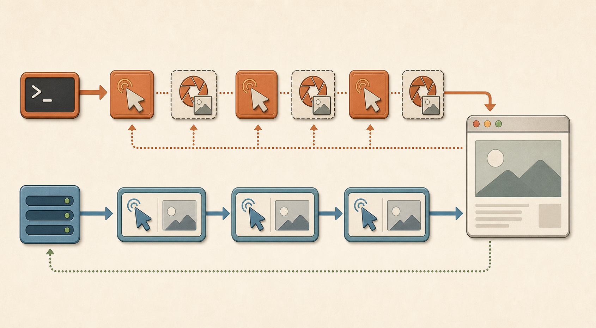

Experiment 1 · Browser automation
Playwright: MCP cuts token load — when the protocol shape fits.
Same browser, same fixtures, same model. The skill arm drives Chromium through playwright-cli; the MCP arm drives it through typed browser tools.
Both paths drive the same browser; the difference is how much page context each tool result carries.
The Task Suite
The fixture server renders per-trial state over HTTP, so the agent has to use the browser. The same seed produces the same page for every arm.
| Task | What the agent must do | Skill | MCP |
|---|---|---|---|
tier1_login | Sign in and save a dashboard screenshot. | 5/5 | 5/5 |
tier1_scrape | Extract a seeded table into JSON. | 5/5 | 5/5 |
tier1_form | Submit a form and capture the per-trial token. | 5/5 | 5/5 |
tier1_products | Visit five product pages and write title/price JSON. | 5/5 | 5/5 |
tier2_checkout | Find a marked product, add to cart, complete checkout. | 5/5 | 5/5 |
tier2_recovery | Trigger an error, read the code, resubmit correctly. | 5/5 | 2/5 |
The Cost Picture
On tasks where both browser surfaces complete cleanly, MCP usually needs fewer tokens. The form task is an outlier: lots of action/check cycles amplify per-cycle overhead.
Widths are normalized to checkout skill tokens, the largest completed clean task at 304,195 total tokens.
Why MCP Is Cheaper Here
The difference is mostly payload shape, not step count. CLI skill workflows often need an explicit snapshot after each action. Playwright MCP often bundles the post-action accessibility snapshot into the action result.

Mechanism: CLI often separates action and observation; MCP often returns page context with the action.
Skill loop
playwright-cli clickplaywright-cli snapshot- Read text payload
- Repeat for the next action
MCP loop
browser_click- Action result includes page context
- Move to the next action
- Fewer separate round trips
Where MCP Breaks
The same shape that lowers payload does not automatically improve convergence. On tier2_recovery, MCP passed 2/5 and the other three trials hit the 240 s wall.
Conservative read: MCP can solve the recovery flow, but the tool-result shape leaves the agent prone to wedging on stale page state during multi-step correction. Typically the agent loops on a stale snapshot rather than re-fetching. The skill arm passed 5/5 at the same wall budget.
| Tier | Skill success | MCP success | Skill avg tokens | MCP avg tokens | Skill/MCP |
|---|---|---|---|---|---|
| Tier 1 | 100% | 100% | 218,012 | 132,996 | 1.64x |
| Tier 2 | 100% | 70% | 302,127 | 150,630 | 2.01x |
Takeaway
For browser automation, MCP has a strong cost advantage when the workflow remains stable: same success, similar turns, lower payload. The trade is that multi-step recovery can fail in a different way, so success and cost have to be read together.
Read the full Playwright writeup, the GitHub visual brief, or the cross-experiment visual guide.